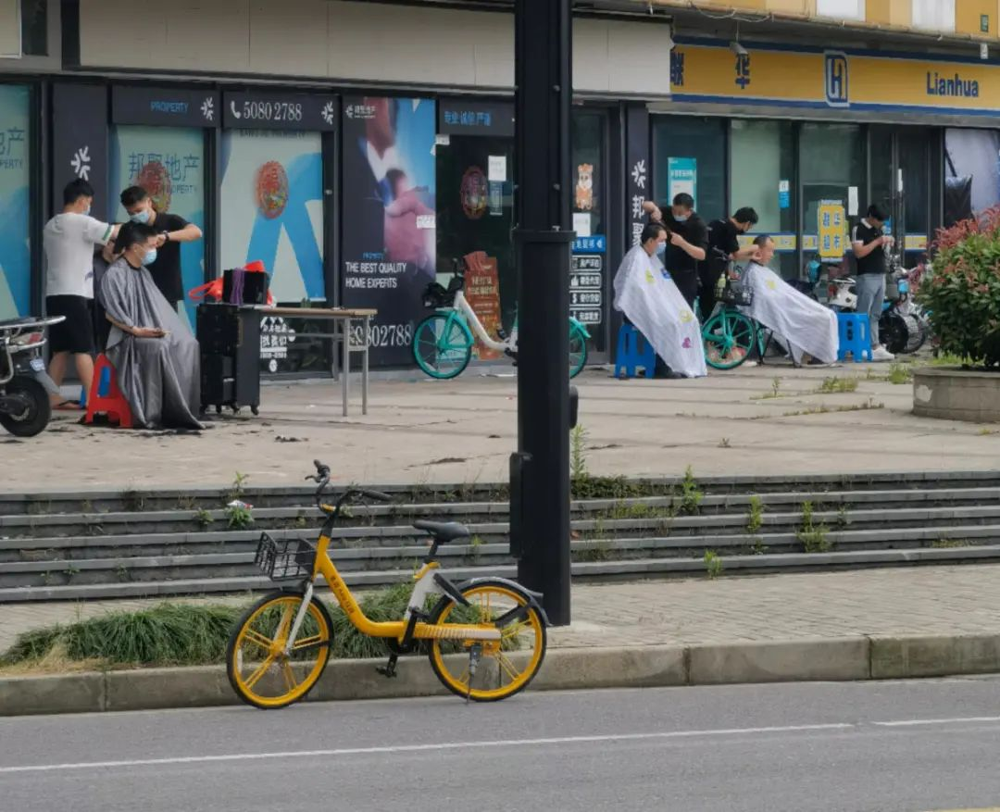
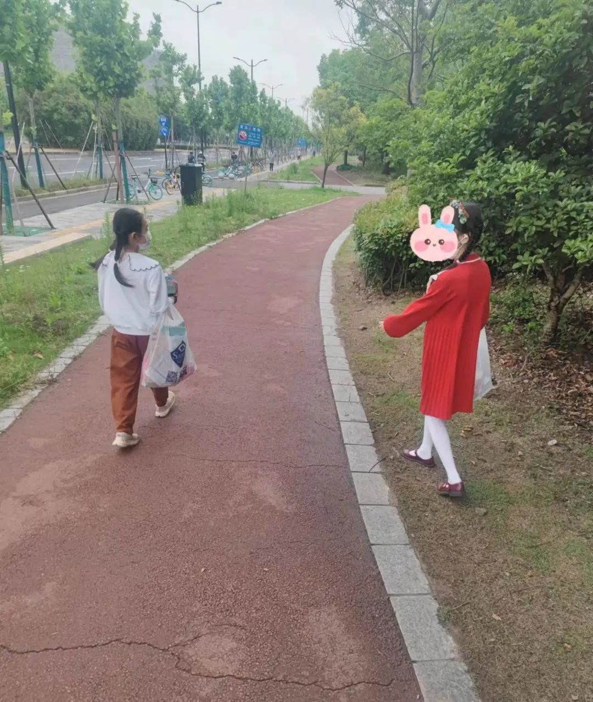

我这解封了嘿
原创 V姐万事屋 V姐来了 2022-05-30 18:40 发表于上海
原文链接(长) 原文链接(短)
Hi ,我是V姐。
昨晚通知，从今天开始，我们小区可以自由出门了，幸福来得太突然。我站在小区门口，突然感觉人生路选择过于丰富，简直不知该往哪里走。
但是呢，因为室内服务业还没有复工，现在每个上海博主的街头直播，你都能看到路上的理发大军。

一张板凳，一把剪刀。男士们排排坐，刀起发落。
上一次出现这种景象，可能还是清兵入关。
昨天上海发布了重磅文件《上海市加快经济恢复和重振行动方案》，包括了促进经济恢复的方方面面。
主要包括下面几个方向：促进复工复产，帮助企业纾困，促消费，拉投资，保就业。
我过了一下，跟大家关系紧密的有以下几点：
**1、汽车牌照增加4万个。置换新能源车，补贴1万1辆。**
上海车牌大约要9万元一张，还经常拍不到，连续拍5,6次中标已经是顺利的了。因此今年增加供给，想要买车的朋友可以在这个窗口期下手，车牌好拍不说，应该价格也会松动。
深圳在上周出台了重磅消费补贴，比如手机，电脑等数码产品补贴15%，最高2000元。
上海在后续应该也会继续出台促销费的细则，涵盖更多品类。希望各地能在这方面卷起来，看谁补贴多，不能输！
**2、优化人才直接落户，居转户，购房等条件，加大海外人才引进、服务和支持力度。**
上海要开始抢人了，同时降低人才的限购门槛。对于想要落户的上海的朋友，请密切关注政策变化，或许是一个不错的窗口期。另外，假设多20万人，就是多了20万张房票，对于楼市的影响是比较大的。
**3、完善房地产政策，支持刚性和改善性住房需求。年内完成中心城区成片旧区改造，全面提速零星旧区改造，年内启动8个以上城中村改造。**
第一句话说明上海很快首套和二套的政策也会适当放松，但是参考南京放开二手房限购的一日游政策，上海不会放开限购。估计会在三价就低，离婚补丁这些地方宽松。
第二句话就是货币化安置，又称棚改或者拆迁。这些人拿了钱，肯定要去买房子，也是拉动楼市的一股力量。
**4、国资商业办公室免房租半年；银行帮扶中小企业，应贷尽贷；财政对于餐饮等特困行业，录用应届上海毕业生的企业等给予现金补贴。**
如果你是一个小企业主，可以关注一下政府给予的优惠政策，或许可以帮到你。今年确实不容易，咱们如果有可以拿的补贴，不要错过了。
最近中概股涨的不错，阿里，拼多多，百度等1季度财报发布后，市场都是买单的。
从财报看，这些公司的共同点是降本增效，裁员，收缩业务线，销售和营销费用大幅降低，不再盲目扩张，聚焦自己的优势业务做利润。比如阿里聚焦天猫和阿里云，拼多多聚焦用户粘性和农业供应链。
不烧钱，不拼盈利增速，只拼利润。这是什么？是价值股。
这或许是未来的一个趋势，互联网龙头往价值股转型，大家投资时主要看盈利质量。
其实现在不仅是大企业，小公司也是如此，要扎扎实实做利润。
不能赚了一点钱，就想着光鲜的大办公室，盲目扩张人员，贪图一些不着调的title，因为外在这些浮夸的东西把自己玩死了。公司还小的时候，不需要满脑子想怎么搞企业文化，需要想着怎么活下来。
硬要说我们公司做事的风格，那就是 **极度务实，少发牢骚**。
务实让人有利润，少发牢骚其实也很重要。我跟不少HR聊过，他们内部裁员的时候，团队负责人最先开掉的，不一定是能力最差的，经常是喜欢散发负能量，擅长阴阳怪气的。
我就这点跟一些创业者沟通，他们也表示这种人在团队里，杀伤力是最大的。但凡有得选，都要把他们换掉。
其实我做自媒体也清楚地意识到这点，很多朋友会留言觉得我比较乐观，或者就观点表达不同意见，大部分都是理性友好的，这都没关系。也有少数人会开始发疯，以前我会试图讲道理，现在反手就拉黑。
我也建议做自媒体的朋友，不要去舍不得这部分数据，他们凑的这个粉丝数量一毛钱不值。
因为负能量爆棚的人，他们最大的快乐不是自己有成就，是看别人倒霉。无论你想要怎么变现，他们不会为你付费，看到别人赚钱成功，如丧考妣。
这些人喜欢拉踩，擅长撕逼，你时间宝贵，浪费在这些人身上，实在可惜。
**尽量分享有用的东西，散发正面的气场，有问题可以讲，不要阴阳怪气，就事论事不扩大，这样可以筛选围绕在你身边的人。**
这个筛选重要而不紧急，但是长期践行，会让人受益无穷。
一味迎合负面情绪，暂时会很有吸引力，但是早晚被反噬。围绕在你身边的人，都是不满，愤懑，绝望，甚至恶毒的人，咱们图什么呢？
今天下午下课后，带两个小朋友出门去超市，让她们挑选六一儿童节礼物。超市里品种有限，两娃就挑了一堆漂亮的文具，笔啊，橡皮啊，本子啊，然后唱着歌开心地回家了。

我特别喜欢她们的口头禅：妈妈，今天是最快乐的一天！
大人要像孩子一样快乐当然很难，但是我们或许值得努力一下。